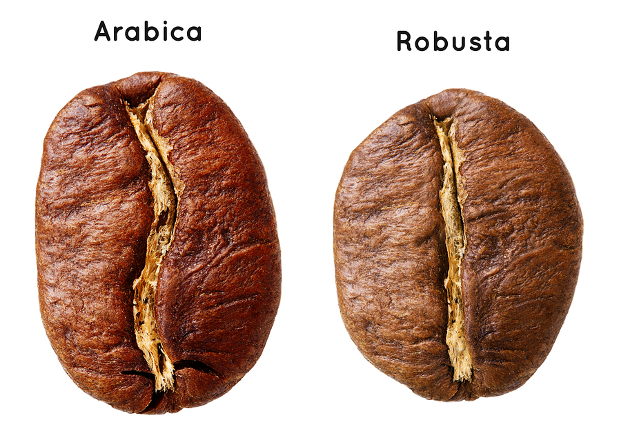
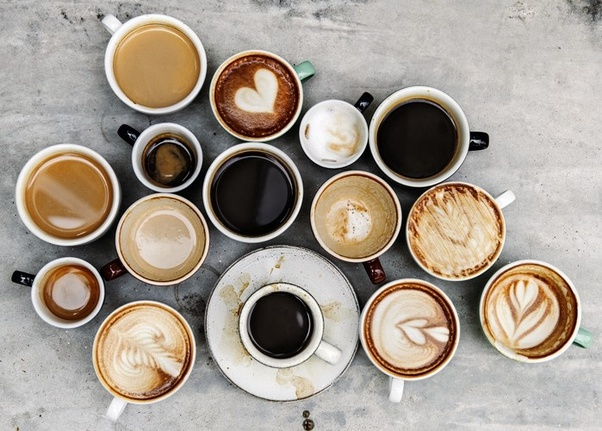

Different types of Coffee beans
There are about three different types of coffee beans. Atleast these three are the most popular: Arabica, Robusta, Liberica, and Excelsa.
Arabica
Arabica’s prevalence in the world production range from 60 to 75 percent. These plants are occasionally referred to as the mountain varieties because they are grown at higher altitudes with ample shade and steady rainfall. Arabica beans tend to have brighter bodies. Also, they usually have with more complex flavor profiles and aromas, which is why they tend to be more popular among serious coffee drinkers.
Robusta
These plants are popular for for their high caffeine level and hardiness. Robusta beans are known for being able to put up with a much wider range of climates and altitudes. Also, they withstand diseases much better than other varieties. That resistance makes them better for growing in large crops. Higher quality robust tends to have a lower acidity and heavy body. These brews stand up better against things like cream and sugar.
Liberica and Excelsa
Excelsa is actually a sub variety of Liberica; however, the two types have very different profiles, so many people still consider them two completely different types. These beans were (and are when you can find them) known for having a distinct, woody or smoky flavor with a full body and floral or fruity aroma. These beans are mostly used to add an extra layer of complexity and depth to coffee blends, rather than being sold on their own.
Different types of coffee drinks
The type of coffee drinks almost seem endless, however there are a few staples. There is drip coffee which is the regular cup of coffee, and ofcourse people add cream and sugar to taste. There is the Americano which is shots of espresso and water. There is the cappuccino which is espresso steamed milk and whipped milk. A macchiato is espresso and whipped milk. A latter is espresso steamed milk and whipped milk, but it has more steamed milk compared to a cappuccino. People also often add flavoring to lattes. There is also an irish coffee that is espresso whiskey and whipped cream. Lastly, there is a red eye which is drip coffee and shots of espresso. There are ofcourse many more different coffee drinks, but these are the most popular.